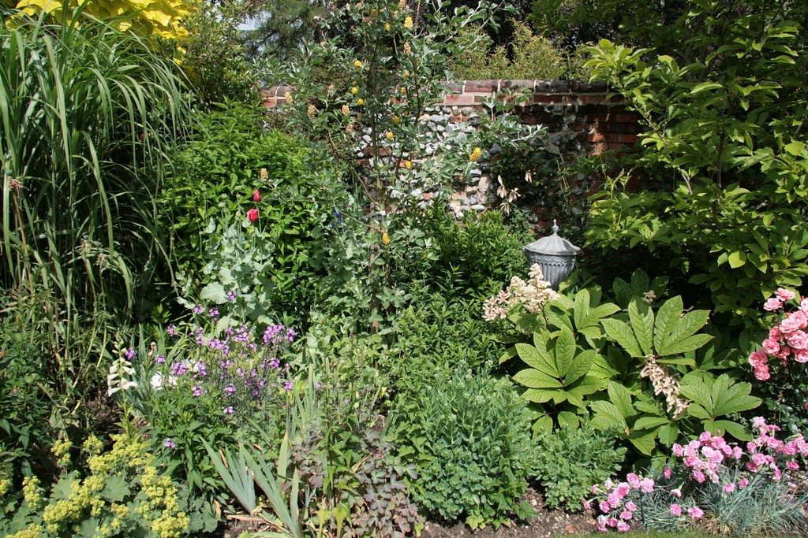

Floral Fantastic
The joy that spreads with both sunshine and rain!
Year Round Garden Planner: How To Create A Four Season Garden
While planting a garden is not an overly taxing chore, planning for a four-season garden takes a little more thinking and organizing. Designing year-round gardens ensures that your home is surrounded by color and interest through all four seasons.
Year-Round Garden Planner
Before beginning your garden, create a year-round garden planner where you can identify the plants that will bloom each season in your garden. A planner will not only help you keep track of what you have planted, but it will also allow you to add garden notes or other thoughts as well as pictures.
How to Create a Four-Season Garden
Designing year-round gardens simply begins with choosing appropriate plants for your region [1]. Depending on where you live, you can use any combination of perennials, annuals and container plantings for these all-season flower gardens.
Although it is somewhat easier for gardeners in the South to accomplish a variety of color all season long, northerly gardeners may achieve interest and color year round as well by implementing plants with interesting foliage or other features.
The key to a successful year-round garden is to know which species do best in your region and understand when their display is greatest. To create balance in your four-season garden, it is best to choose at least two types of plants that will flower together during each season.
Four-Season Container Gardens
In addition to all-season flower garden, you can also choose to create four-season container gardens. These are a great alternative for those living in cooler climates. Containers [2] are also an excellent way to add color to your garden all year long.
Containers offer a flexible solution for using annuals or can be a great home for attractive evergreen or perennial plants. Spring-blooming bulbs [3] can be mixed with summer and fall-blooming plants [4] in a mixed container display that provides color well into the cool season in most areas.
Four-season container gardens can also provide the option of changing your plantings with each new season.
©Floral Fantastic: May, 2020